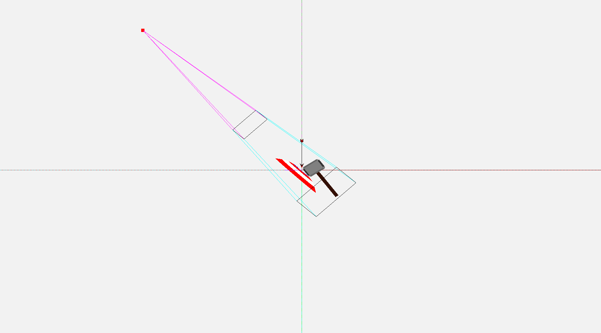
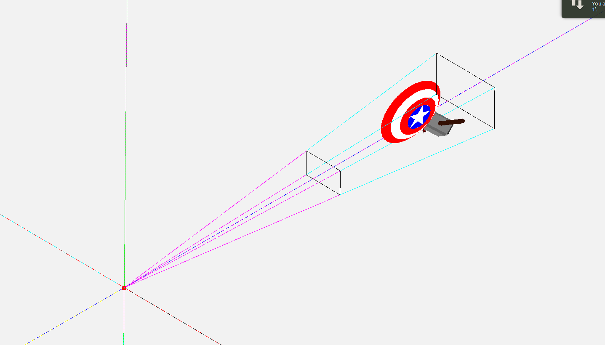
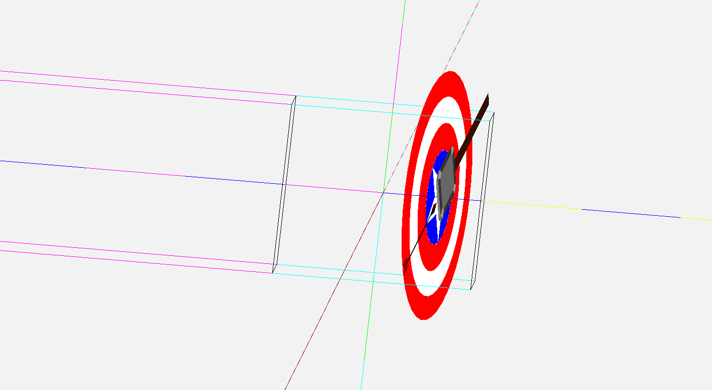
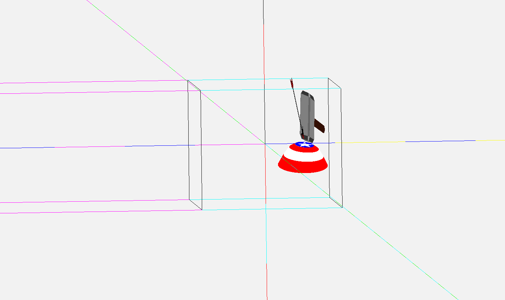
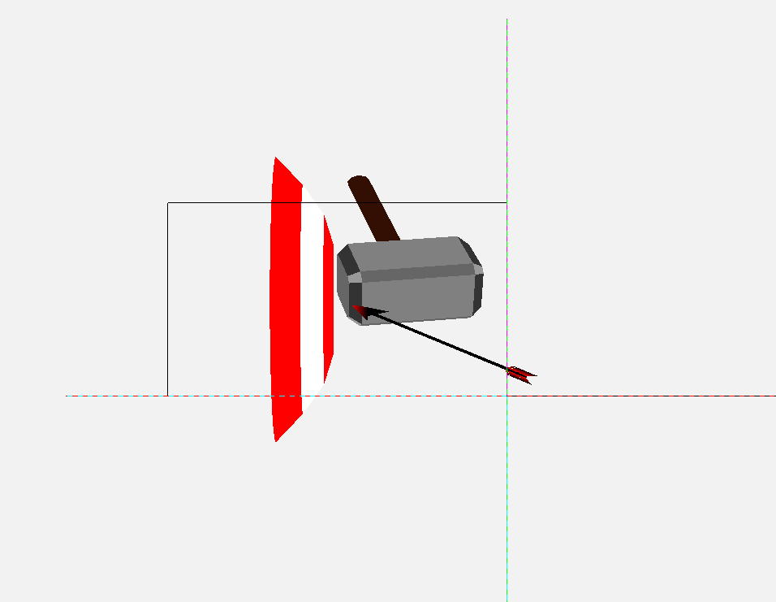

We loaded the models made in our previous assignmnet into a single scene, within a single VAO. We rotated, translated and scaled them appropriately to create an exciting scene of Captain America's shield smultaneously blocking a blow from Thor's hammer Mjolnir and a hit from Hawkeye's arrow.

Default View (WCS)
Each axis is coloured with 2 colors, with unit length strokes of each color. Axes remain fized in World Coordinate System.
X-axis: Red & Cyan, with Red marking the portion between 0 and 1
Y-axis: Blue & Yellow, with Blue marking the portion between 0 and 1
Z-axis: Green & Magenta, with Green marking the portion between 0 and 1
Controls:
W,A,S,D to translate. Z to zoom out. X to zoom in. Up, Left, Right, Down, Page Up and Page Down to rotate.
0 to change to World Coordinate System (default)
1 to change to View Coordinate System
2 to change to Clipping Coordinate System
3 to change to Normalized Device Coordinate System
4 to change to Device Coordinate System

World Coordinate System
View frustum is drawn using camera position, up direction, lookat point, lrtb margins and distances of near and far planes from eye. Models are loaded and transformed according to values in scene file.

Clipping Coordinate System
Eye is translated to origin and view frustum is aligned with coordinate axes. Done by left multiplying a translation and then a rotation matrix.

Normalized Device Coordinate System
View frustum is changed to a cube with xyz bounds in -1 to 1. Done by left multiplying a shearing, a scaling and a normalizing matrix in order.

Device Coordinate System
x and y from each point mapped to a pixel on screen, using window coordinates. z mapped between 0 and 1 for storing in z-buffer. Done by scaling and translation.